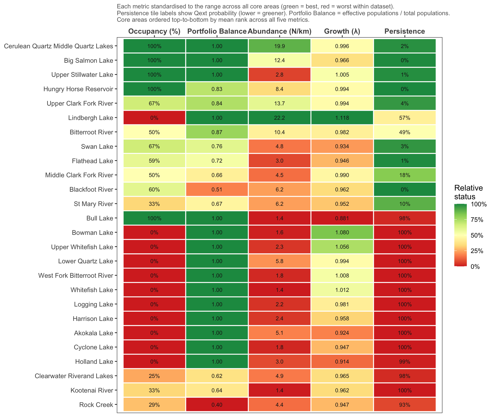
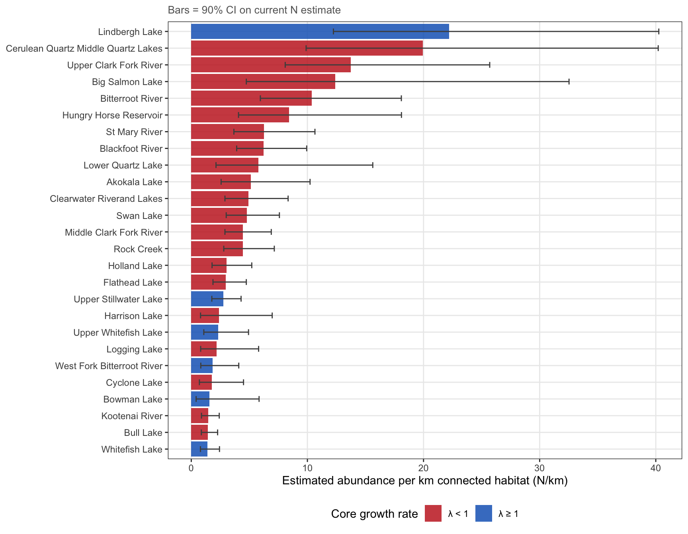
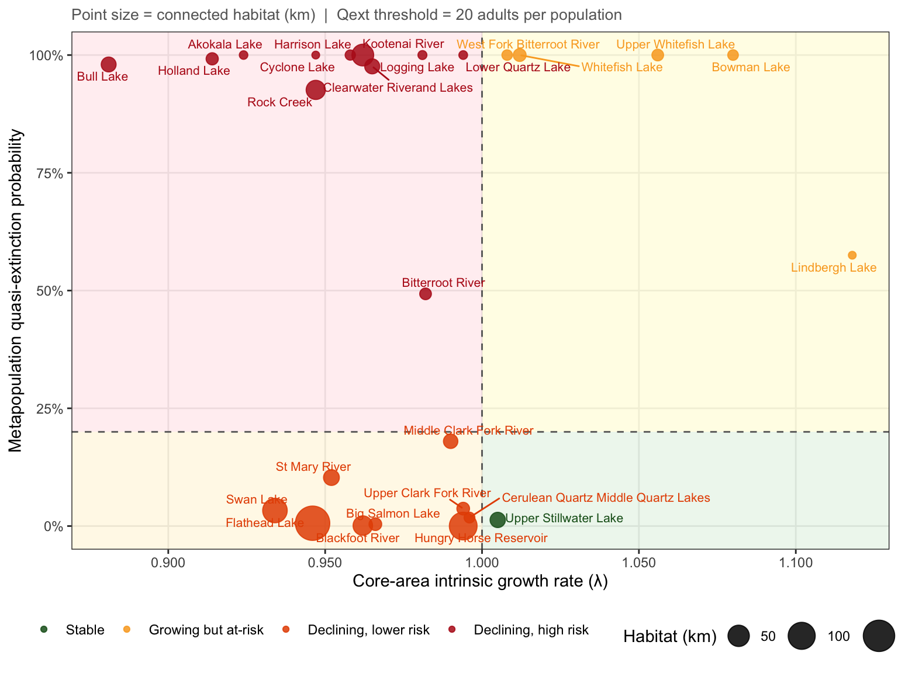
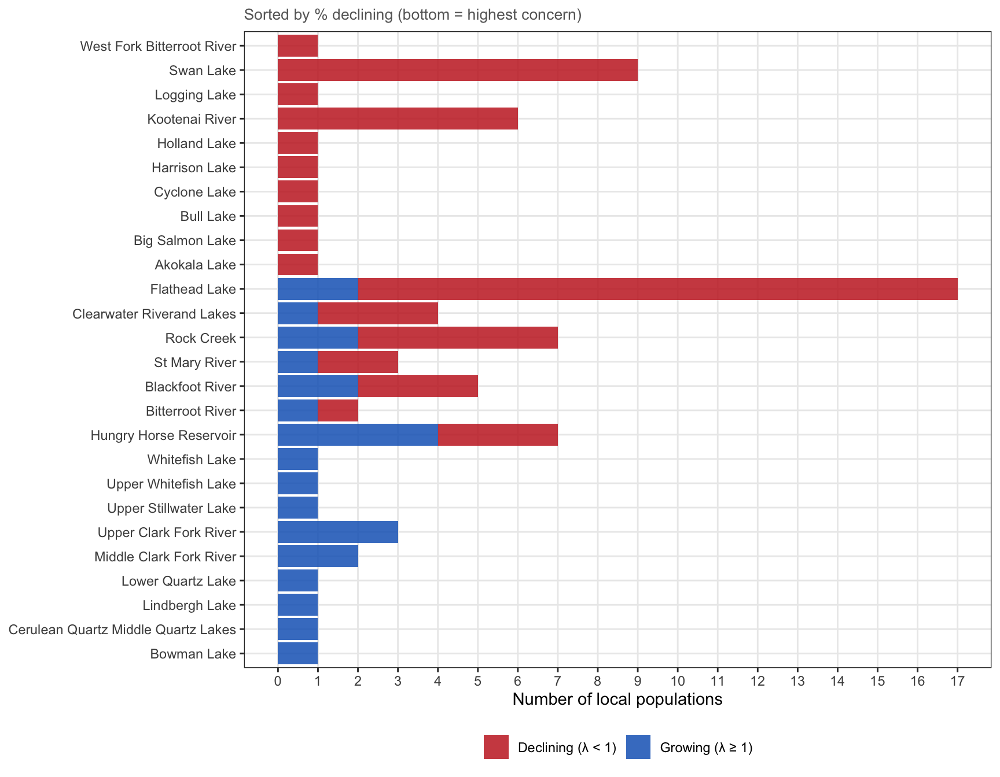

Core Area Status
Viability and Portfolio Metrics Across the Columbia Headwaters Recovery Unit
Overview
26 core areas, 80 local populations, 1984–2022. Model v1_22 / Data v1_8.
Core areas approximate probable metapopulations but boundaries also reflect watershed structure and jurisdictional units. They are the primary viability assessment unit for this recovery unit.
Composite Metrics: Multiple Perspectives
No single metric captures core area status fully. The five metrics used here each prioritise a different conservation objective and are not interchangeable.
| Metric | Conservation objective | Key limitation |
|---|---|---|
| Abundance (N/km) | Maximise total fish | Blind to spatial distribution |
| Growth rate (λ) | Identify recovering vs. declining units | Backward-looking |
| Occupancy | Maintain all extant local populations (≥ 20 adults) | Insensitive to population size |
| Portfolio balance | Detect over-concentration in a single dominant population | Independent of total abundance |
| Persistence (1 − Qext) | Long-term viability under current trajectory | Projection-dependent |
Occupancy and portfolio balance deserve particular attention. A core that has lost populations has reduced network redundancy regardless of total abundance — remaining populations carry the full burden of demographic rescue. Portfolio balance (effective populations / total, from Shannon diversity of the abundance distribution) flags cores where fish are concentrated in one tributary: functionally a single population even if others nominally persist.
The heatmap below presents all five metrics simultaneously, each standardised to the range across core areas, so managers can apply their own weighting rather than a fixed composite.
Multi-Metric Status Overview
Abundance Density by Core Area

Risk Matrix: Core Growth Rate vs. Quasi-Extinction Risk

Quadrants: green = stable (λ ≥ 1, low Qext); yellow = growing but small or isolated; orange = declining but with larger population buffer; red = declining with high extinction risk.
Population Status by Core Area

Core-Area Summary Table
Occupancy = % of local populations with estimated N ≥ 20 adults (last data year). Portfolio Balance = effective number of populations / total populations, derived from the Shannon diversity of the within-core abundance distribution (1 = perfectly balanced; values near 0 indicate dominance by a single population). Qext (total) = P(total core N < 20 × n_pops at any projection year). Qext (majority) = P(majority of populations fall below 20 adults at any projection year). Model v1_22 | Data v1_8 | Run date: 2026-03-24